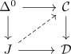

left and right anodyne in general not inner anodyne
Proposition
Let $f: X \rightarrow Y$ be a left and right anodyne map between simplicial sets Then $f$ is in general not inner anodyne map
Proof
Consider
for the classifier nerve J. We will show that this is not an inner anodyne, but both left and right anodyne:
It is an inner fibration, as it is given by $N(*) \rightarrow N(J)$ (cf. morphism between nerves of categories as inner ifibration)
It is clearly not an isomorphism. Hence it is not an inner anodyne (cf. isomorphism and lifting against itself).
Thus it suffices to show, that it is both a left and right anodyne map. By left anodyne and opposite as right anodyne and nerve of a category and opposite category we have
Hence it suffices to show that this is left anodyne (resp. the following argument works as well for right anodyneness)
Let

be a lifting problem, where $\mathcal{C} \rightarrow \mathcal{D}$ is a left fibration, hence also an inner fibration.
By left fibration as isofibration and isofibration and RLP against isomorphism classifier we get a solution, showing that $\Delta^0 \rightarrow J$ is left anodyne.